Learners rehearse the hard calls with AI customers, buying committees, and colleagues, by text, voice, camera, and screen share. Then they get coaching that points to the exact moment it came from.
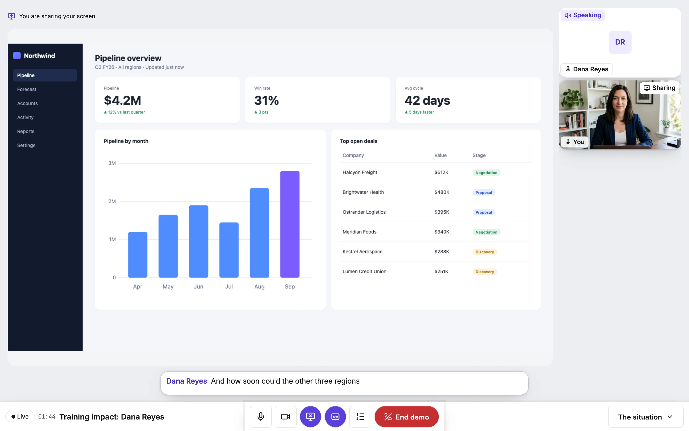
Most training stops at knowing. A rep watches the objection-handling video, passes the quiz, and walks into a renewal call where the CFO interrupts them twice in the first minute. Nothing in the course prepared them for that, because nothing in the course talked back.
Skills like discovery, negotiation, and hard feedback are built the way any skill is built: by doing them, getting specific feedback, and doing them again. Role play makes that loop cheap enough to run every week, private enough that people actually try, and honest enough that the feedback is worth reading.
A quiz can tell you whether a rep knows the refund policy. It cannot tell you whether they can hold that policy while an upset customer talks over them. That only shows up in the conversation itself.
Each scenario puts the learner across from a character with a goal of their own, a reason to resist, and a memory of everything said so far. Learners type or talk, on a laptop or a phone, and the character answers the way a real person in that seat would.
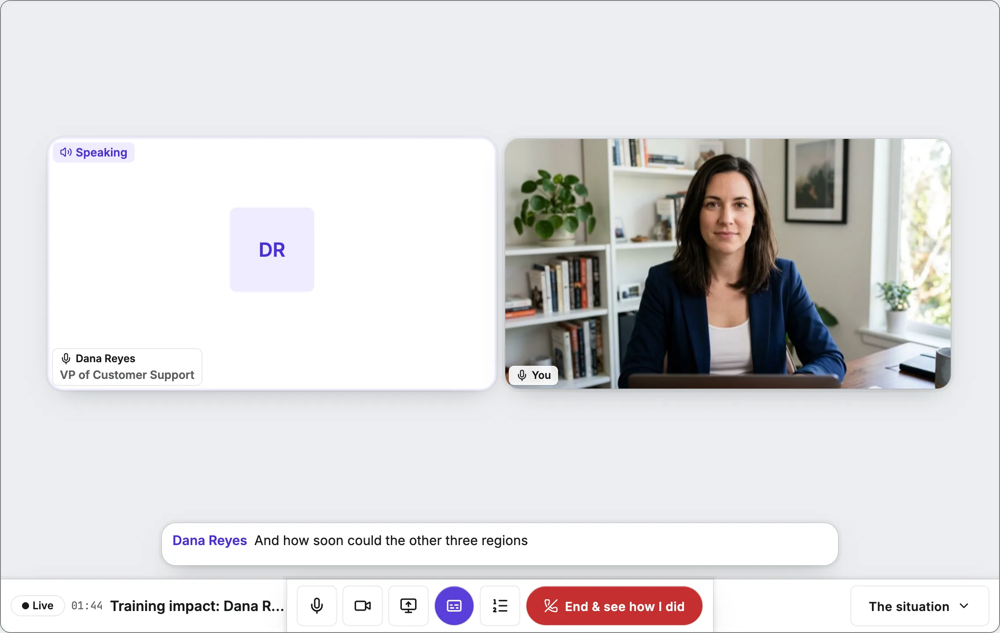
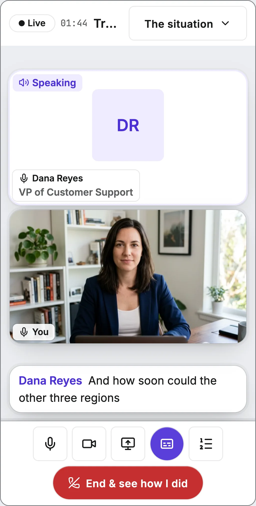
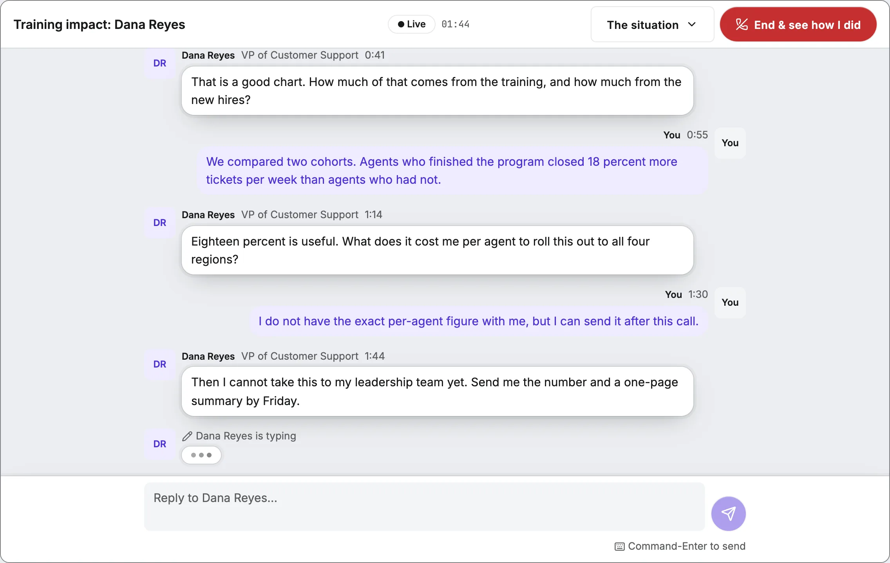
Real deals are rarely decided by one person. A renewal call can have a CFO watching cost, an IT lead watching security, and a manager who has to get forty people to use the thing.
Panels put up to four characters in one call. Each one has its own priorities and its own voice, and they take turns the way people in a meeting do. Nobody answers anybody else, so the learner has to run the room: name who they are speaking to, and close every open question before the call ends.
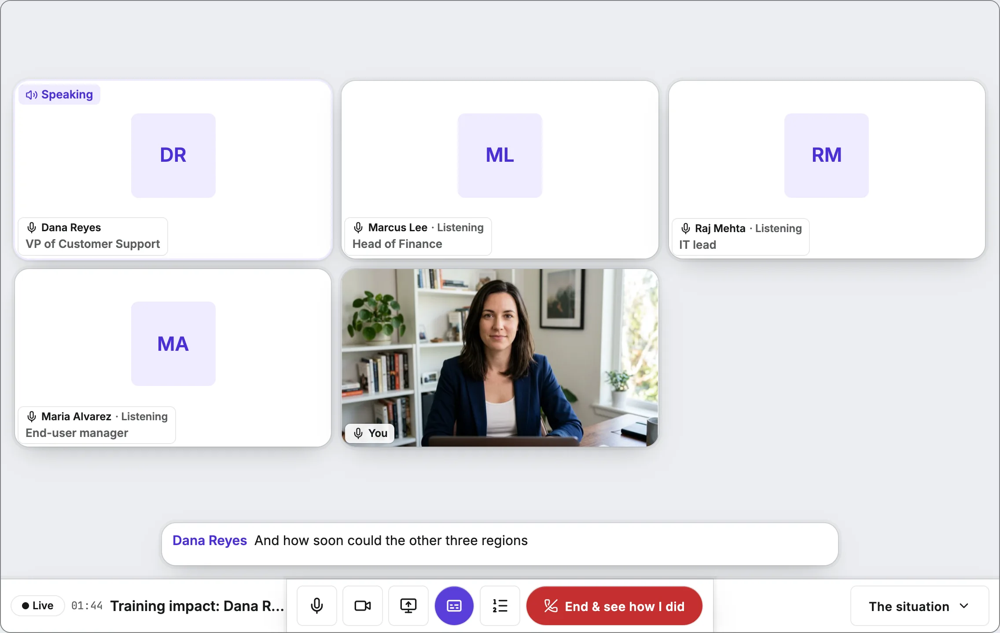
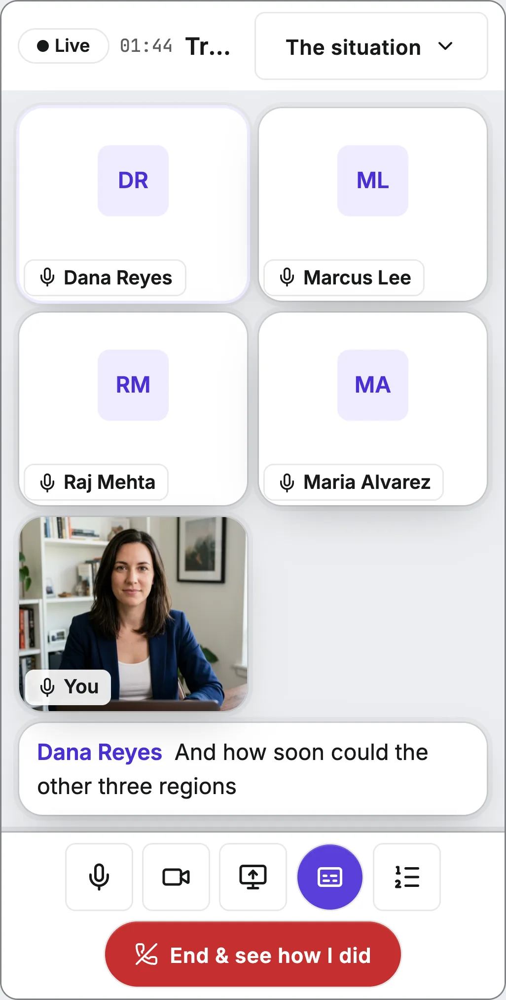
Some skills are easier to build with another person in the room. Learners can invite a teammate by name or with a link, then take on the same scenario together, by text or voice, from two devices or two cities.
Each person keeps a role, so a rep and their sales engineer can rehearse the call they have next week, with the AI playing the customer. Or the AI can step out of the scene entirely and judge, while two colleagues practice on each other.
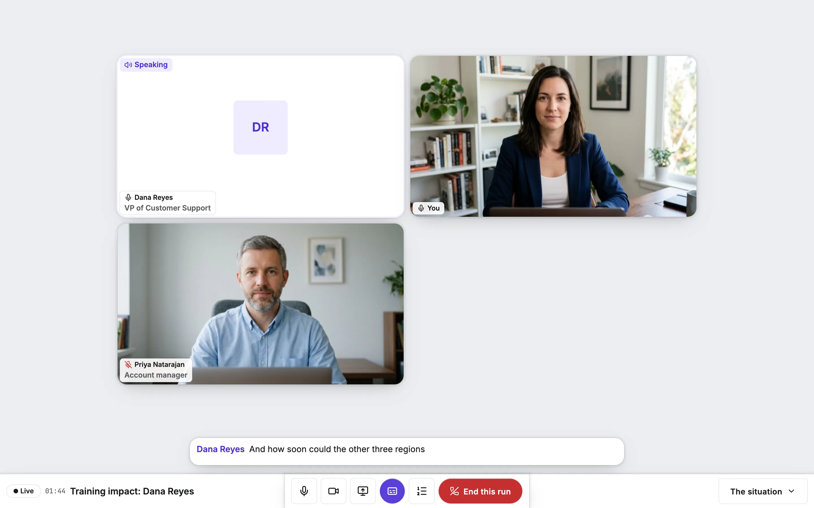
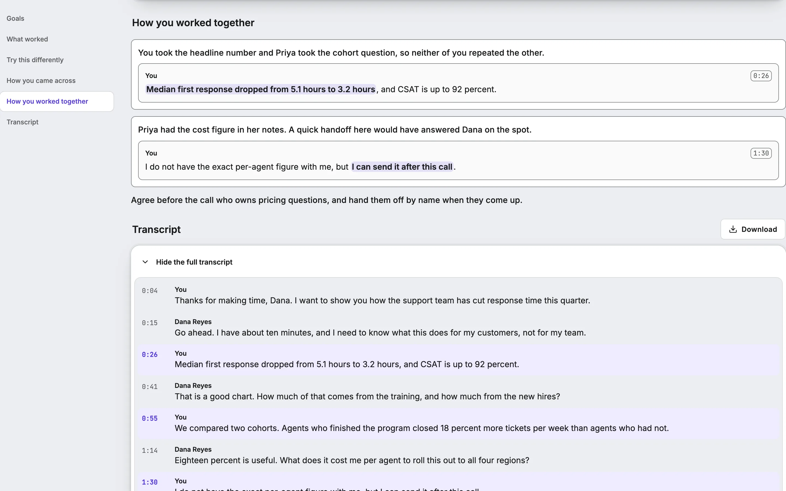
Some conversations are mostly show and tell. In demo practice, the learner turns on their camera, shares their screen, and walks an AI prospect through the product. The prospect watches what is on the screen and asks about it, the way a real buyer would. Colleagues can join as attendees.
It also works the other way around. In a fix-the-pitch scenario, the AI is the seller and shares its own screen, and somewhere in the pitch are mistakes the author planted. The learner has to catch them, on the screen or in what was said, and explain what is wrong.
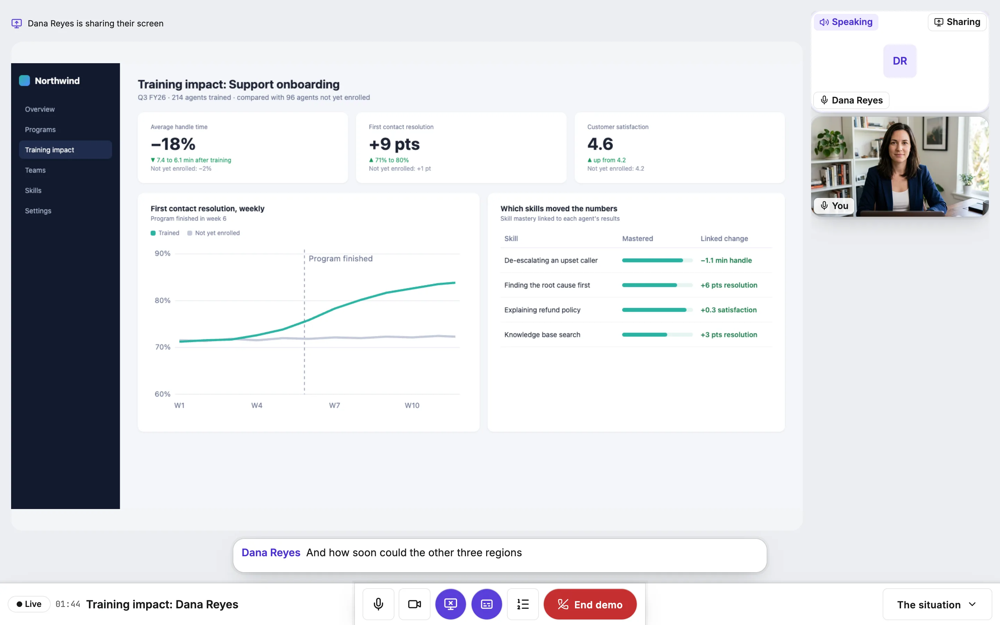
Generic feedback is easy to ignore. "Work on discovery" gives a learner nothing to do on Monday. So every point of coaching here is tied to a specific moment: the line they said, or the frame of the screen they were showing. One click plays it back.
Grading and coaching are kept apart on purpose. Goals are judged against the scenario author’s rubric, and only that judgment counts toward mastery. Coaching, including how the learner came across on camera and voice, is there to help them improve, and it never becomes a score.
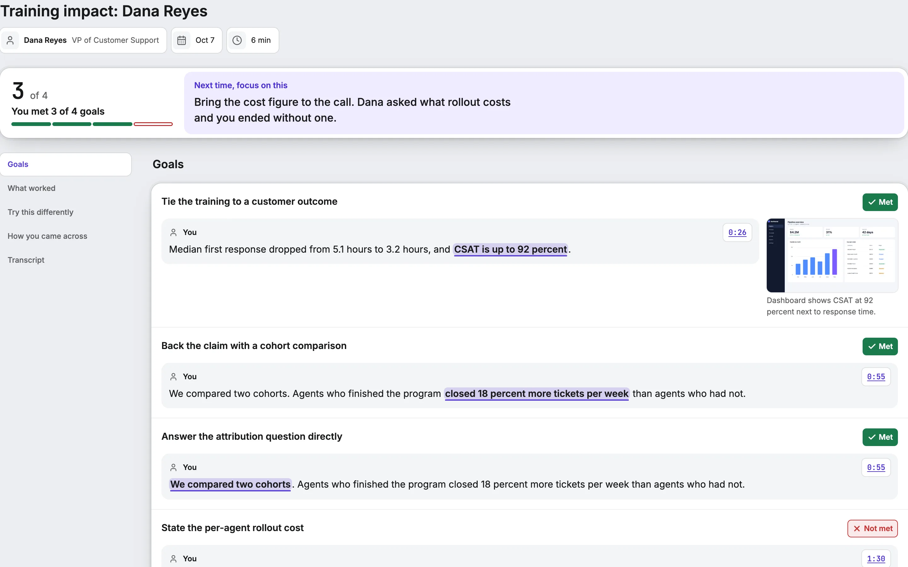
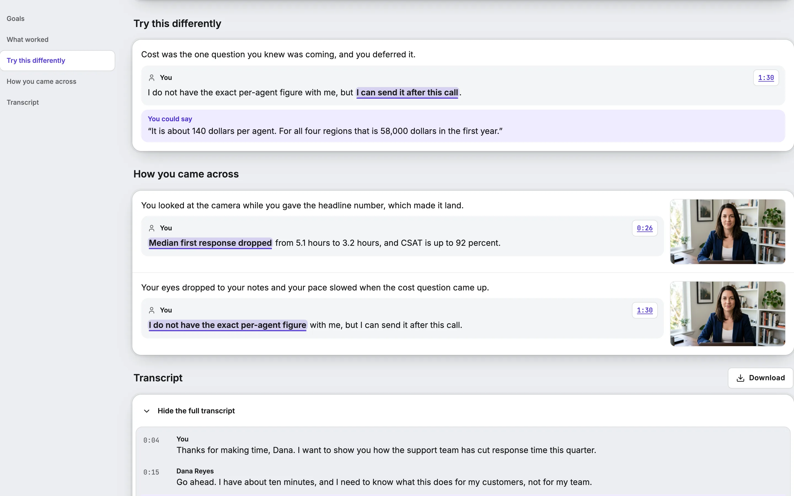
These are the formats an author can build today. One scenario picks one format, and a course can mix as many as it needs.
Any format can be tightened or loosened with these settings, so the same skill can be practiced at a beginner’s pace or under real pressure.
Every run happens in a live room. The characters hear the learner and answer in real time. Alongside them, a separate listener follows every voice in the room and writes down who said what and when, and keeps periodic still frames of anything on camera or on a shared screen.
When the run ends, the transcript is graded against the scenario’s goals, with each verdict tied to the lines and frames that support it. Coaching is written from the same record. The mastery result goes to the learner’s profile, and the coaching goes to the learner.
Goes to the record. Only the graded goals count toward mastery.
Goes to the learner. Coaching links back to each moment, so they can replay it and try again.